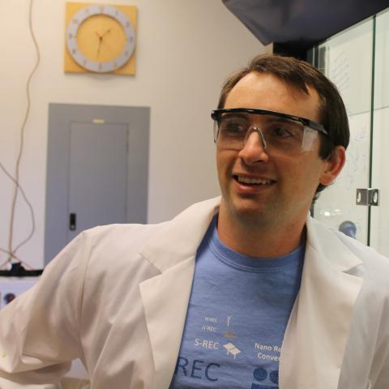

Our Story
Shaw & Townsend Innovations, LLC was founded to bridge cutting‑edge materials research with
frontline maintenance and sustainment experience for the Department of the Navy.
Research Driven, Readiness Minded
Our mission is to deliver mission‑focused support that helps organizations improve performance,
readiness, and execution through disciplined processes and measurable outcomes. We combine
laboratory‑grade materials science with operationally proven maintenance practices to create
solutions that work in the hangar, on the flight line, and at sea.
Leadership Team

Jason P. Shaw, USN (Ret.) – CEO
Retired Aerospace Maintenance Duty Officer (AMDO) with 28 years of experience in aircraft maintenance,
logistics, and sustainment. Jason brings deep expertise in program management, cost‑schedule‑performance
integration, acquisition consulting, risk management, and innovation across NAVAIR, NAVSEA, and Pentagon
portfolios.

Troy Townsend, PhD – COO
Professor of Chemistry & Materials Science at St. Mary’s College of Maryland. Troy leads materials
chemistry, electroplating, nanomaterials, and laboratory management efforts, ensuring that every
technology we deploy is grounded in rigorous research and validated testing.